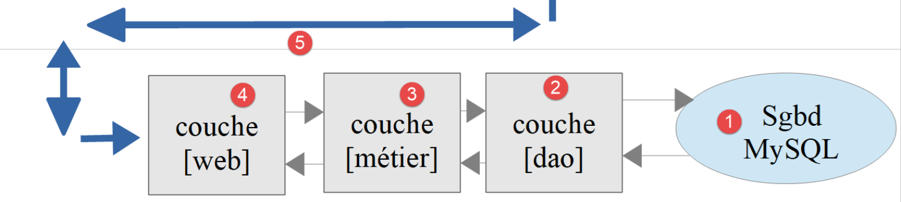
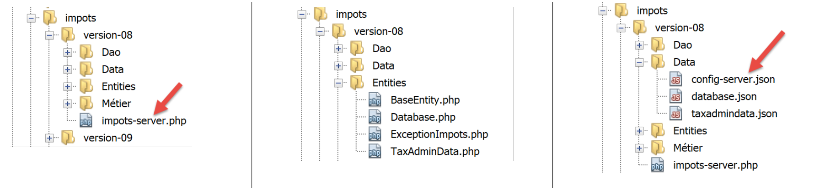

18. تمرين عملي – الإصدار 8
سنعود إلى التطبيق النموذجي – الإصدار 5 (الفقرة التي تحتوي على الرابط) ونحوله إلى تطبيق عميل/خادم.
18.1. مقدمة
كانت بنية الإصدار 5 كما يلي:

- تتولى الطبقة المسماة [dao] (كائنات الوصول إلى البيانات) التعامل مع قاعدة بيانات MySQL ونظام الملفات المحلي؛
- تقوم الطبقة المسماة [business] بحساب الضرائب؛
- يعمل البرنامج النصي الرئيسي كمنسق: فهو يقوم بإنشاء مثيلات لطبقتي [DAO] و[business logic] ثم يتواصل مع طبقة [business logic] لتنفيذ المهام الضرورية؛
سنقوم بترحيل هذه البنية إلى بنية العميل/الخادم التالية:

- في [2]، سنعيد استخدام طبقة [DAO] من الإصدار 5، مع إزالة الطرق الخاصة بالوصول إلى نظام الملفات المحلي. وسيتم نقل هذه الطرق إلى طبقة [DAO] الخاصة بالعميل [6، 7]؛
- في [3]، ستبقى طبقة [business] كما هي في الإصدار 5، باستثناء طرق [executeBatchImpôts، saveResults]، التي سيتم ترحيلها إلى طبقة [DAO] الخاصة بالعميل [7]؛
- في [4]، يجب كتابة البرنامج النصي للخادم: وسيتعين عليه:
- إنشاء طبقات [business] و [DAO] [3، 2]؛
- التواصل مع البرنامج النصي للعميل [5، 7]؛
- في [7]، يجب كتابة طبقة [dao] الخاصة بالعميل:
- ستكون عميل HTTP لبرنامج الخادم النصي [4، 5]؛
- ستعيد استخدام الطرق للوصول إلى نظام الملفات المحلي من طبقة [dao] للإصدار 5؛
- في [8]، ستتوافق طبقة [business] الخاصة بالعميل مع واجهة [BusinessInterface] من الإصدار 5. ومع ذلك، سيكون تنفيذها مختلفًا. في الإصدار 5، كانت طبقة [business] هي التي تقوم بحساب الضريبة. هنا، طبقة [business] الخاصة بالخادم هي التي تقوم بهذا الحساب. وبالتالي، ستستدعي طبقة [business] طبقة [DAO] [7] للتواصل مع الخادم وطلب حساب الضريبة؛
- في [9]، سيحتاج البرنامج النصي لوحدة التحكم إلى إنشاء مثيلات لطبقات [DAO، الأعمال] الخاصة بالعميل وبدء تنفيذها؛
18.2. الخادم
نحن نركز على جانب الخادم من التطبيق.

سيتم تنفيذ هذه البنية من خلال البرامج النصية التالية:

18.2.1. الكيانات المتبادلة بين الطبقات

الكيانات المتبادلة بين الطبقات هي تلك الواردة في الإصدار 5 والموصوفة في القسم المرتبط.
18.2.2. طبقة [dao]

تنفذ طبقة [dao] واجهة [InterfaceServerDao] التالية:
<?php
// namespace
namespace Application;
interface InterfaceServerDao {
// reading tax administration data
public function getTaxAdminData(): TaxAdminData;
}
- السطر 9: تسترد طريقة [getTaxAdminData] بيانات إدارة الضرائب من قاعدة بيانات؛
يتم تنفيذ واجهة [InterfaceServerDao] بواسطة فئة [ServerDao] التالية:
<?php
// namespace
namespace Application;
// definition of a ImpotsWithDataInDatabase class
class ServerDao implements InterfaceServerDao {
// the TaxAdminData object containing tax bracket data
private $taxAdminData;
// the [Database] type object containing the characteristics of the BD
private $database;
// manufacturer
public function __construct(string $databaseFilename) {
// store the JSON configuration of the bd
$this->database = (new Database())->setFromJsonFile($databaseFilename);
// we prepare the attribute
$this->taxAdminData = new TaxAdminData();
try {
// open the database connection
$connexion = new \PDO($this->database->getDsn(), $this->database->getId(), $this->database->getPwd());
// we want every SGBD error to trigger an exception
$connexion->setAttribute(\PDO::ATTR_ERRMODE, \PDO::ERRMODE_EXCEPTION);
// start a transaction
$connexion->beginTransaction();
// fill in the tax bracket table
$this->getTranches($connexion);
// fill in the constants table
$this->getConstantes($connexion);
// the transaction is completed successfully
$connexion->commit();
} catch (\PDOException $ex) {
// is there a transaction in progress?
if (isset($connexion) && $connexion->inTransaction()) {
// transaction ends in failure
$connexion->rollBack();
}
// trace the exception back to the calling code
throw new ExceptionImpots($ex->getMessage());
} finally {
// close the connection
$connexion = NULL;
}
}
// reading data from the database
private function getTranches($connexion): void {
…
}
// reading the constants table
private function getConstantes($connexion): void {
…
}
// returns data for tax calculation
public function getTaxAdminData(): TaxAdminData {
return $this->taxAdminData;
}
}
تم عرض هذا الرمز في القسم المرتبط.
18.2.3. طبقة [الأعمال]
تنفذ طبقة [الأعمال] واجهة [InterfaceServerMetier] التالية:
<?php
// namespace
namespace Application;
interface InterfaceServerMetier {
// calculating a taxpayer's taxes
public function calculerImpot(string $marié, int $enfants, int $salaire): array;
}
يتم تنفيذ واجهة [InterfaceServerMetier] بواسطة فئة [ServerMetier] التالية:
<?php
// namespace
namespace Application;
class ServerMetier implements InterfaceServerMetier {
// dao layer
private $dao;
// tax administration data
private $taxAdminData;
//---------------------------------------------
// setter couche [dao]
public function setDao(InterfaceServerDao $dao) {
$this->dao = $dao;
return $this;
}
public function __construct(InterfaceServerDao $dao) {
// a reference is stored on the [dao] layer
$this->dao = $dao;
// recover data for tax calculation
// method [getTaxAdminData] may throw a ExceptionImpots exception
// we then let it go back to the calling code
$this->taxAdminData = $this->dao->getTaxAdminData();
}
// tAX CALCULATION
// --------------------------------------------------------------------------
public function calculerImpot(string $marié, int $enfants, int $salaire): array {
…
// result
return ["impôt" => floor($impot), "surcôte" => $surcôte, "décôte" => $décôte, "réduction" => $réduction, "taux" => $taux];
}
// --------------------------------------------------------------------------
private function calculerImpot2(string $marié, int $enfants, float $salaire): array {
…
// result
return ["impôt" => $impôt, "surcôte" => $surcôte, "taux" => $coeffR[$i]];
}
// revenuImposable=annualwage-discount
// the allowance has a minimum and a maximum
private function getRevenuImposable(float $salaire): float {
…
// result
return floor($revenuImposable);
}
// calculates any discount
private function getDecôte(string $marié, float $salaire, float $impots): float {
…
// result
return ceil($décôte);
}
// calculates any reduction
private function getRéduction(string $marié, float $salaire, int $enfants, float $impots): float {
..
// result
return ceil($réduction);
}
}
تمت مناقشة هذا الكود بالفعل في الإصدار 1 في القسم المرتبط. تم عرض نسخته الموجهة للكائنات مع قاعدة بيانات في القسم المرتبط.
18.2.4. نص برمجي الخادم

ينفذ البرنامج النصي للخادم طبقة [الويب] [4]. يتم تكوين البرنامج النصي [impots-server] بواسطة ملف JSON التالي [config-server.json]:
{
"rootDirectory": "C:/myprograms/laragon-lite/www/php7/scripts-web/impots/version-08",
"databaseFilename": "Data/database.json",
"taxAdminDataFileName": "Data/taxadmindata.json",
"relativeDependencies": [
"/Entities/BaseEntity.php",
"/Entities/ExceptionImpots.php",
"/Entities/TaxAdminData.php",
"/Entities/Database.php",
"/Dao/InterfaceServerDao.php",
"/Dao/ServerDao.php",
"/Métier/InterfaceServerMetier.php",
"/Métier/ServerMetier.php"
],
"absoluteDependencies": ["C:/myprograms/laragon-lite/www/vendor/autoload.php"],
"users": [
{
"login": "admin",
"passwd": "admin"
}
]
}
- السطر 1: الدليل الجذر الذي سيتم قياس مسارات الملفات انطلاقًا منه؛
- السطر 2: ملف تكوين JSON لقاعدة بيانات MySQL؛
- السطر 3: ملف JSON الذي يحتوي على بيانات إدارة الضرائب؛
- الأسطر 5–14: ملفات التطبيق؛
- السطر 15: التبعية لمكتبات الجهات الخارجية، في هذه الحالة Symfony؛
- الأسطر 16-20: مجموعة المستخدمين المصرح لهم باستخدام التطبيق؛
ملفات JSON [database.json، taxadmindata.json] هي تلك الموجودة في الإصدار 5، كما هو موضح في القسم المرتبط.
يقوم البرنامج النصي [impots-server] بتنفيذ طبقة [web] على النحو التالي:
<?php
// strict adherence to declared types of function parameters
declare (strict_types=1);
// namespace
namespace Application;
// error handling by PHP
//ini_set("display_errors", "0");
//
// configuration file path
define("CONFIG_FILENAME", "Data/config-server.json");
// we retrieve the configuration
$config = \json_decode(file_get_contents(CONFIG_FILENAME), true);
// include the necessary script dependencies
$rootDirectory = $config["rootDirectory"];
foreach ($config["relativeDependencies"] as $dependency) {
require "$rootDirectory$dependency";
}
// absolute dependencies (third-party libraries)
foreach ($config["absoluteDependencies"] as $dependency) {
require "$dependency";
}
// definition of constants
define("DATABASE_CONFIG_FILENAME", $config["databaseFilename"]);
//
// symfony dependencies
use \Symfony\Component\HttpFoundation\Response;
use \Symfony\Component\HttpFoundation\Request;
// prepare JSON server response
$response = new Response();
$response->headers->set("content-type", "application/json");
$response->setCharset("utf-8");
// retrieve the current query
$request = Request::createFromGlobals();
// authentication
$requestUser = $request->headers->get('php-auth-user');
$requestPassword = $request->headers->get('php-auth-pw');
// does the user exist?
$users = $config["users"];
$i = 0;
$trouvé = FALSE;
while (!$trouvé && $i < count($users)) {
$trouvé = ($requestUser === $users[$i]["login"] && $users[$i]["passwd"] === $requestPassword);
$i++;
}
// set the response status code
if (!$trouvé) {
// not found - code 401
$response->setStatusCode(Response::HTTP_UNAUTHORIZED);
$response->headers->add(["WWW-Authenticate" => "Basic realm=" . utf8_decode("\"Serveur de calcul d'impôts\"")]);
// error msg
$response->setContent(\json_encode(["réponse" => ["erreur" => "Echec de l'authentification [$requestUser, $requestPassword]"]], JSON_UNESCAPED_UNICODE));
$response->send();
// end
exit;
}
// we have a valid user - we check the parameters received
$erreurs = [];
// you need three parameters GET
$method = strtolower($request->getMethod());
$erreur = $method !== "get" || $request->query->count() != 3;
// mistake?
if ($erreur) {
$erreurs[] = "Méthode GET requise avec les seuls paramètres [marié, enfants, salaire]";
}
// marital status is restored
if (!$request->query->has("marié")) {
$erreurs[] = "paramètre marié manquant";
} else {
$marié = trim(strtolower($request->query->get("marié")));
$erreur = $marié !== "oui" && $marié !== "non";
// mistake?
if ($erreur) {
$erreurs[] = "paramètre marié [$marié] invalide";
}
}
// the number of children
if (!$request->query->has("enfants")) {
$erreurs[] = "paramètre enfants manquant";
} else {
$enfants = trim($request->query->get("enfants"));
// number of children must be an integer >=0
$erreur = !preg_match("/^\d+$/", $enfants);
// mistake?
if ($erreur) {
$erreurs[] = "paramètre enfants [$enfants] invalide";
}
}
// we recover the annual salary
if (!$request->query->has("salaire")) {
$erreurs[] = "paramètre salaire manquant";
} else {
// salary must be an integer >=0
$salaire = trim($request->query->get("salaire"));
$erreur = !preg_match("/^\d+$/", $salaire);
// mistake?
if ($erreur) {
$erreurs[] = "paramètre salaire [$salaire] invalide";
}
}
// other parameters in the query?
foreach (\array_keys($request->query->all()) as $key) {
// valid parameter?
if (!\in_array($key, ["marié", "enfants", "salaire"])) {
$erreurs[] = "paramètre [$key] invalide";}
}
// mistakes?
if ($erreurs) {
// an error code 400 is sent to the customer
$response->setStatusCode(Response::HTTP_BAD_REQUEST);
$response->setContent(json_encode(["réponse" => ["erreurs" => $erreurs]], JSON_UNESCAPED_UNICODE));
$response->send();
exit;
}
// we have everything you need to work
// server architecture creation
$msgErreur = "";
try {
// creation of the [dao] layer
$dao = new ServerDao($config["databaseFilename"]);
// creation of the [business] layer
$métier = new ServerMetier($dao);
} catch (ExceptionImpots $ex) {
// we note the error
$msgErreur = utf8_encode($ex->getMessage());
}
// mistake?
if ($msgErreur) {
// an error code 500 is sent to the customer
$response->setStatusCode(Response::HTTP_INTERNAL_SERVER_ERROR);
$response->setContent(\json_encode(["réponse" => ["erreur" => $msgErreur]], JSON_UNESCAPED_UNICODE));
$response->send();
exit;
}
// tAX CALCULATION
$result = $métier->calculerImpot($marié, (int) $enfants, (int) $salaire);
// we return the answer
$response->setContent(json_encode(["réponse" => $result], JSON_UNESCAPED_UNICODE));
$response->send();
تعليقات
- السطر 16: نقوم بتحميل ملف التكوين؛
- الأسطر 18–26: نقوم بتحميل جميع التبعيات؛
- السطر 29: اسم ملف [database.json]؛
- الأسطر 32–33: نعلن الفئات من المكتبات الخارجية التي سيتم استخدامها؛
- الأسطر 36-38: نُعد استجابة JSON؛
- الأسطر 40-52: نتحقق من أن المستخدم الذي يقوم بالطلب هو بالفعل مستخدم مصرح له؛
- الأسطر 54-63: إذا لم يكن كذلك، نرسل رمز HTTP 401 يشير إلى رفض الوصول. عند استلام هذا الرمز ورأس HTTP [WWW-Authenticate => Basic realm=]، تعرض معظم المتصفحات نافذة مصادقة تطلب من المستخدم تسجيل الدخول؛
- السطر 59: توضح استجابة JSON للخادم سبب الخطأ. ستكون جميع استجابات الخادم عبارة عن سلسلة JSON في شكل مصفوفة [‘response’=>’something’]؛
- الأسطر 64–117: نتحقق من صحة الطلب:
- طلب GET مع ثلاثة معلمات بالضبط؛
- معلمة [married] يجب أن تكون قيمتها ‘yes’ أو ‘no’؛
- معلمة [children] يجب أن تكون قيمتها عددًا صحيحًا >= 0؛
- معلمة [salary] يجب أن تكون قيمتها عددًا صحيحًا >=0؛
- السطر 65: في كل مرة يتم فيها اكتشاف خطأ، تتم إضافة رسالة خطأ إلى المصفوفة [$errors]؛
- الأسطر 120–126: في حالة حدوث خطأ، يتم إرسال رمز HTTP [400 Bad Request] إلى العميل (السطر 122)؛
- السطر 123: توضح استجابة JSON للخادم سبب الخطأ؛
- بدءًا من السطر 132، تم التحقق من كل شيء. يمكننا إنشاء مثيلات لطبقات [dao، business]. هذا الإنشاء له تكلفة ويجب ألا يتم إلا إذا كنا متأكدين من أن لدينا طلبًا صالحًا؛
- الأسطر 130–138: يتم إنشاء بنية الخادم. قد يؤدي إنشاء طبقة [DAO] إلى إثارة استثناء [ExceptionImpots]. إذا حدث هذا الاستثناء، يتم تسجيل الخطأ؛
- الأسطر 135-138: إذا حدث استثناء، فإننا نرسل رمز حالة HTTP 500 إلى العميل. يشير هذا الرمز إلى تعطل الخادم؛
- السطر 143: يشرح الرد سبب الخطأ؛
- السطر 148 : يتم تفويض حساب الضريبة إلى طبقة [business]؛
- السطور 150–151: إرسال الاستجابة؛
دعونا نختبر هذا البرنامج النصي باستخدام متصفح. دعونا نطلب عنوان URL الآمن [https://localhost:443/php7/scripts-web/impots/version-08/impots-server.php?marié=oui&enfants=5&salaire=100000]:

- في [1]، عنوان URL الآمن المطلوب؛
- في [2]، المعلمات الثلاثة [married, children, salary]؛
- في [3]، أرسل خادم Apache الخاص بـ Laragon شهادة SSL موقعة ذاتيًا. اكتشف المتصفح ذلك وعرض تحذيرًا أمنيًا: فهو يعتبر موقع الخادم غير موثوق به؛
- في [4]، نواصل؛

- في [6]، نواصل؛

- في [7]، يعرض المتصفح نافذة لتسجيل دخول المستخدم؛
- في [9،10]، اكتب [admin] و [admin]؛

- في [13]، استجابة JSON من الخادم؛
دعونا نجري بعض اختبارات الأخطاء:
نطلب عنوان URL [https://localhost/php7/scripts-web/impots/version-08/impots-server.php?marié=x&enfants=x&salaire=x&w=x]
ونحصل على النتيجة التالية:

نقوم بإيقاف تشغيل نظام إدارة قواعد البيانات MySQL ونطلب عنوان URL [https://localhost/php7/scripts-web/impots/version-08/impots-server.php?marié=oui&enfants=3&salaire=60000]:

18.2.5. اختبارات [Codeception]
في كل مرة نقوم فيها بإنشاء إصدار جديد من الخادم، سنقوم باختبار طبقات [business] و [DAO] كما تم القيام به منذ الإصدار 04 (انظر الفقرات الرابط والرابط).
أولاً، نربط مشروع [scripts-web] باختبارات [Codeception]. للقيام بذلك، اتبع نفس الإجراء المستخدم لمشروع [scripts-console] المذكور في الفقرة التي تحتوي على الرابط. وفي النهاية، نحصل على مشروع [scripts-web] يحتوي على مجلد [Test Files]:

سنقوم بإنشاء اختبار لطبقة [dao] واختبار آخر لطبقة [business].
18.2.5.1. اختبارات لطبقة [dao]

سيكون [ServerDaoTest] كما يلي:
<?php
// strict adherence to declared types of function parameters
declare (strict_types=1);
// namespace
namespace Application;
// definition of constants
define("ROOT", "C:/myprograms/laragon-lite/www/php7/scripts-web/impots/version-08");
// configuration file path
define("CONFIG_FILENAME", ROOT . "/Data/config-server.json");
// we retrieve the configuration
$config = \json_decode(\file_get_contents(CONFIG_FILENAME), true);
// include the necessary script dependencies
$rootDirectory = $config["rootDirectory"];
foreach ($config["relativeDependencies"] as $dependency) {
require "$rootDirectory$dependency";
}
// absolute dependencies (third-party libraries)
foreach ($config["absoluteDependencies"] as $dependency) {
require "$dependency";
}
// test -----------------------------------------------------
class ServerDaoTest extends \Codeception\Test\Unit {
// TaxAdminData
private $taxAdminData;
public function __construct() {
// parent
parent::__construct();
// we retrieve the configuration
$config = \json_decode(\file_get_contents(CONFIG_FILENAME), true);
// creation of the [dao] layer
$dao = new ServerDao(ROOT . "/" . $config["databaseFilename"]);
$this->taxAdminData = $dao->getTaxAdminData();
}
// tests
public function testTaxAdminData() {
…
}
}
تعليقات
- الأسطر 9–24: نقوم بإعداد نفس بيئة العمل الموجودة في الخادم [impots-server.php]. ويتم ذلك في الأسطر 9–12 عن طريق تعريف الثابتين اللتين تعتمد عليهما البيئة؛
- الأسطر 32–40: نقوم بإنشاء مثيل لطبقة [dao] المراد اختبارها، كما تم في البرنامج النصي للخادم [impots-server.php]؛
- من هذه النقطة فصاعدًا، نحن في نفس الظروف التي يعمل فيها البرنامج النصي للخادم [impots-server.php]: يمكننا بدء الاختبارات؛
- الأسطر 43–45: طريقة [testTaxAdminData] هي الطريقة الموصوفة في القسم المرتبط؛
نتائج الاختبار هي كما يلي:

18.2.5.2. اختبارات طبقة [business]

سيكون اختبار [ServerMetierTest] كما يلي:
<?php
// strict adherence to declared types of function parameters
declare (strict_types=1);
// namespace
namespace Application;
// definition of constants
define("ROOT", "C:/myprograms/laragon-lite/www/php7/scripts-web/impots/version-08");
// configuration file path
define("CONFIG_FILENAME", ROOT . "/Data/config-server.json");
// we retrieve the configuration
$config = \json_decode(\file_get_contents(CONFIG_FILENAME), true);
// include the necessary script dependencies
$rootDirectory = $config["rootDirectory"];
foreach ($config["relativeDependencies"] as $dependency) {
require "$rootDirectory$dependency";
}
// absolute dependencies (third-party libraries)
foreach ($config["absoluteDependencies"] as $dependency) {
require "$dependency";
}
// test class
class ServerMetierTest extends \Codeception\Test\Unit {
// business layer
private $métier;
public function __construct() {
parent::__construct();
// we retrieve the configuration
$config = \json_decode(\file_get_contents(CONFIG_FILENAME), true);
// creation of the [dao] layer
$dao = new ServerDao(ROOT . "/" . $config["databaseFilename"]);
// creation of the [business] layer
$this->métier = new ServerMetier($dao);
}
// tests
public function test1() {
…
}
public function test2() {
…
}
..
public function test11() {
…
}
}
تعليقات
- الأسطر 9–24: نقوم بإعداد نفس بيئة العمل الخاصة بخادم [impots-server.php]. ويتم ذلك في الأسطر 9–12 عن طريق تعريف الثابتين اللتين تعتمد عليهما البيئة؛
- الأسطر 30–38: نقوم بإنشاء مثيل لطبقة [business] المراد اختبارها، كما تم في البرنامج النصي للخادم [impots-server.php]؛
- من الآن فصاعدًا، نحن في نفس ظروف البرنامج النصي للخادم [impots-server.php]: يمكننا بدء الاختبارات؛
- الأسطر 40–53: الطرق [test1, test2…, test11] هي تلك الموصوفة في القسم المرتبط؛
نتائج الاختبار هي كما يلي:

18.3. العميل
نحن نركز على جانب العميل من التطبيق.

سيتم تنفيذ هذه البنية من خلال البرامج النصية التالية:

18.3.1. الكيانات المتبادلة بين الطبقات

تم وصف جميع الكيانات المذكورة أعلاه وهي قيد الاستخدام بالفعل:
18.3.2. طبقة [dao]

تنفذ طبقة [dao] واجهة [InterfaceClientDao] التالية:
<?php
// namespace
namespace Application;
interface InterfaceClientDao {
// reading taxpayer data
public function getTaxPayersData(string $taxPayersFilename, string $errorsFilename): array;
// calculating a taxpayer's taxes
public function calculerImpot(string $marié, int $enfants, int $salaire): array;
// recording results
public function saveResults(string $resultsFilename, array $taxPayersData): void;
}
- السطر 9: تقوم الدالة [getTaxPayersData] بتحميل بيانات دافعي الضرائب من الملف [$taxPayersFilename] إلى الذاكرة. وفي حالة وجود أي أخطاء، يتم تسجيلها في الملف [$errorsFilename]؛
- السطر 12: تقوم الدالة [calculateTaxes] بحساب ضريبة دافع الضرائب؛
- السطر 15: تقوم الدالة [saveResults] بحفظ البيانات من المصفوفة [$taxPayersData] — التي تمثل نتائج عدة حسابات ضريبية — في الملف [$resultsFilename]؛
يتم تنفيذ واجهة [InterfaceClientDao] بواسطة فئة [ClientDao] التالية:
<?php
namespace Application;
// dependencies
use \Symfony\Component\HttpClient\HttpClient;
class ClientDao implements InterfaceClientDao {
// using a Trait
use TraitDao;
// attributes
private $urlServer;
private $user;
// manufacturer
public function __construct(string $urlServer, array $user) {
$this->urlServer = $urlServer;
$this->user = $user;
}
// tAX CALCULATION
public function calculerImpot(string $marié, int $enfants, int $salaire): array {
// create a HTTP customer
$httpClient = HttpClient::create([
'auth_basic' => [$this->user["login"], $this->user["passwd"]],
"verify_peer" => false
]);
// make a request to the server
$response = $httpClient->request('GET', $this->urlServer,
["query" => [
"marié" => $marié,
"enfants" => $enfants,
"salaire" => $salaire
]]);
// the answer is retrieved
$json = $response->getContent(false);
$array = \json_decode($json, true);
$réponse = $array["réponse"];
// logs
// print "$json=json\n";
// retrieve response status
$statusCode = $response->getStatusCode();
// mistake?
if ($statusCode !== 200) {
// we have an error - we throw an exception
$réponse = ["statut HTTP" => $statusCode] + $réponse;
$message = \json_encode($réponse, JSON_UNESCAPED_UNICODE);
throw new ExceptionImpots($message);
}
// we return the answer
return $réponse;
}
}
تعليقات
- السطر 10: ندرج [TraitDao] (انظر الفقرة المرتبطة) التي تنفذ الطريقتين [getTaxPayersData] و [saveResults]. وبذلك يتبقى فقط تنفيذ الطريقة [calculateTaxes]. ويتم تنفيذ ذلك في الأسطر 22–49؛
- الأسطر 16–19: يأخذ منشئ فئة [ClientDao] معلمتين:
- عنوان URL [$urlServer] لخادم حساب الضرائب؛
- المصفوفة [$user] للمفاتيح "login" و"passwd" التي تحدد المستخدم الذي يقوم بالطلب؛
- السطر 22: تستقبل طريقة [calculateTaxes] المعلمات الثلاثة المراد إرسالها إلى خادم حساب الضرائب؛
- الأسطر 24–27: يتم إنشاء عميل HTTP باستخدام:
- السطر 25: بيانات اعتماد المستخدم الذي يقوم بالطلب؛
- السطر 26: الخيار الذي يمنع عميل HTTP من التحقق من صحة شهادة SSL المرسلة من الخادم؛
- الأسطر 29-34: يتم استعلام الخادم بالمعلمات الثلاثة التي يتوقعها؛
- السطر 36: نسترد استجابة JSON من الخادم. إذا لم نقم بتعيين المعلمة [false] في طريقة [Response::getContent]، فعندما تكون حالة استجابة الخادم في النطاق [3xx-5xx] (حالة خطأ)، يقوم كائن [Response] بإلقاء استثناء بمجرد محاولتنا استرداد محتوى الاستجابة [Response::getContent] أو رؤوس HTTP الخاصة بها [Response::getHeaders]. هنا، بغض النظر عن حالة HTTP للاستجابة، نريد أن نتمكن من الوصول إلى محتواها، حتى لو كان ذلك فقط لتسجيله (السطر 40)؛
- السطران 37-38: استجابة الخادم عبارة عن سلسلة JSON لمصفوفة [‘response’=>something]. نسترد [something]؛
- السطر 40: نقوم بتسجيل استجابة JSON في وضع التطوير؛
- السطر 42: نسترد رمز حالة الاستجابة؛
- الأسطر 44-49: إذا لم يكن رمز حالة HTTP هو 200، فهذا يعني أن الخادم قد واجه مشكلة. ثم نطلق استثناء [ExceptionImpots] مع رسالة تتكون من استجابة JSON للخادم مرفقة برمز حالة HTTP؛
- السطر 51: نُرجع النتيجة، وهي مصفوفة ترابطية بمفاتيح [tax, surcharge, discount, reduction, rate]؛
18.3.3. الطبقة [التجارية]

تنفذ طبقة [الأعمال] [8] [BusinessClientInterface] التالية:
<?php
// namespace
namespace Application;
interface InterfaceClientMetier {
// calculating a taxpayer's taxes
public function calculerImpot(string $marié, int $enfants, int $salaire): array;
// batch mode tax calculation
public function executeBatchImpots(string $taxPayersFileName, string $resultsFileName, string $errorsFileName): void;
}
- السطر 9: تقوم الدالة [calculateTaxes] بحساب الضريبة؛
- السطر 12: تحسب الدالة [executeBatchImpots] الضريبة للمكلفين الذين توجد بياناتهم في الملف [$taxPayersFileName]، وتكتب النتائج في الملف [$resultsFileName]، وتكتب أي أخطاء تمت مواجهتها في الملف [$errorsFileName]؛
يتم تنفيذ واجهة [BusinessClientInterface] بواسطة فئة [BusinessClient] التالية:
<?php
// namespace
namespace Application;
class ClientMetier implements InterfaceClientMetier {
// attribute
private $clientDao;
// manufacturer
public function __construct(InterfaceClientDao $clientDao) {
// the reference is stored on the [dao] layer
$this->clientDao = $clientDao;
}
// tAX CALCULATION
public function calculerImpot(string $marié, int $enfants, int $salaire): array {
return $this->clientDao->calculerImpot($marié, $enfants, $salaire);
}
// batch mode tax calculation
public function executeBatchImpots(string $taxPayersFileName, string $resultsFileName, string $errorsFileName): void {
// we let the exceptions coming from the [dao] layer flow upwards
// retrieve taxpayer data
$taxPayersData = $this->clientDao->getTaxPayersData($taxPayersFileName, $errorsFileName);
// results table
$results = [];
// we exploit them
foreach ($taxPayersData as $taxPayerData) {
// tax calculation
$result = $this->calculerImpot(
$taxPayerData->getMarié(),
$taxPayerData->getEnfants(),
$taxPayerData->getSalaire());
// complete [$taxPayerData]
$taxPayerData->setFromArrayOfAttributes($result);
// put the result in the results table
$results [] = $taxPayerData;
}
// recording results
$this->clientDao->saveResults($resultsFileName, $results);
}
}
تعليقات
- الأسطر 11–14: يتلقى منشئ فئة [ClientMetier] مرجعًا إلى طبقة [dao] كمعلمة؛
- الأسطر 17–19: يتم تفويض حساب الضريبة إلى طبقة [dao]؛
- الأسطر 20-38: تم وصف الدالة [executeBatchImpots] في قسم الروابط؛
18.3.4. النص البرمجي الرئيسي

ينفذ البرنامج النصي للعميل [MainImpotsClient.php] طبقة [console] [9]. ويتم تكوينه بواسطة ملف JSON التالي [conf-client.json]:
{
"rootDirectory": "C:/Data/st-2019/dev/php7/poly/scripts-console/impots/version-08",
"taxPayersDataFileName": "Data/taxpayersdata.json",
"resultsFileName": "Data/results.json",
"errorsFileName": "Data/errors.json",
"dependencies": [
"Entities/BaseEntity.php",
"Entities/TaxPayerData.php",
"Entities/ExceptionImpots.php",
"Utilities/Utilitaires.php",
"Dao/InterfaceClientDao.php",
"Dao/TraitDao.php",
"Dao/ClientDao.php",
"Métier/InterfaceClientMetier.php",
"Métier/ClientMetier.php"
],
"absoluteDependencies": [
"C:/myprograms/laragon-lite/www/vendor/autoload.php"
],
"user": {
"login": "admin",
"passwd": "admin"
},
"urlServer": "https://localhost:443/php7/scripts-web/impots/version-08/impots-server.php"
}
- السطر 1: الدليل الجذري للعميل؛
- السطر 2: ملف JSON الذي يحتوي على بيانات دافعي الضرائب؛
- السطر 3: ملف JSON الذي يحتوي على النتائج؛
- السطر 4: ملف JSON الذي يحتوي على الأخطاء؛
- الأسطر 6-19: التبعيات المختلفة لمشروع العميل؛
- الأسطر 20-23: المستخدم الذي يرسل الطلبات إلى خادم حساب الضرائب؛
- السطر 24: عنوان URL الآمن لخادم حساب الضرائب؛
فيما يلي كود البرنامج النصي [MainImpotsClient.php]:
<?php
// strict adherence to declared types of function parameters
declare (strict_types=1);
// namespace
namespace Application;
// error handling by PHP
//ini_set("display_errors", "0");
//
// configuration file path
define("CONFIG_FILENAME", "../Data/config-client.json");
// we retrieve the configuration
$config = \json_decode(file_get_contents(CONFIG_FILENAME), true);
// include the necessary script dependencies
$rootDirectory = $config["rootDirectory"];
foreach ($config["dependencies"] as $dependency) {
require "$rootDirectory/$dependency";
}
// absolute dependencies (third-party libraries)
foreach ($config["absoluteDependencies"] as $dependency) {
require "$dependency";
}
// definition of constants
define("TAXPAYERSDATA_FILENAME", "$rootDirectory/{$config["taxPayersDataFileName"]}");
define("RESULTS_FILENAME", "$rootDirectory/{$config["resultsFileName"]}");
define("ERRORS_FILENAME", "$rootDirectory/{$config["errorsFileName"]}");
//
// symfony dependencies
use Symfony\Component\HttpClient\HttpClient;
// creation of the [dao] layer
$clientDao = new ClientDao($config["urlServer"], $config["user"]);
// creation of the [business] layer
$clientMetier = new ClientMetier($clientDao);
// tax calculation in batch mode
try {
$clientMetier->executeBatchImpots(TAXPAYERSDATA_FILENAME, RESULTS_FILENAME, ERRORS_FILENAME);
} catch (\RuntimeException $ex) {
// error is displayed
print "L'erreur suivante s'est produite : " . $ex->getMessage() . "\n";
}
// end
print "Terminé\n";
exit;
تعليقات
- السطر 13: مسار ملف التكوين؛
- السطر 16: معالجة ملف التكوين؛
- الأسطر 18–26: تحميل التبعيات؛
- السطر 37: إنشاء طبقة [dao]. نمرر معلومتين يتوقعهما منشئ الطبقة:
- عنوان URL لخادم حساب الضرائب؛
- بيانات اعتماد المستخدم الذي سيقوم بتقديم الطلبات؛
- السطر 39: إنشاء طبقة [business]. نمرر مرجعًا إلى طبقة [dao] التي تم إنشاؤها للتو إلى منشئ الطبقة؛
- السطر 43: نطلب من طبقة [business] ما يلي:
- حساب الضرائب لجميع دافعي الضرائب في الملف $config["taxPayerDataFileName"];
- كتابة النتائج في الملف $config["resultsFileName"];
- كتابة الأخطاء في الملف $config["errorsFileName"];
- قد يرمي السطر 43 استثناءات؛
- السطر 46: عرض رسالة خطأ الاستثناء؛
يؤدي تشغيل العميل إلى نفس النتائج التي أسفرت عنها الإصدارات السابقة. تحقق من الملفات التالية:
- [Data/taxpayersdata.json]: بيانات دافعي الضرائب الذين يتم حساب مبلغ الضريبة لهم؛
- [Data/results.json]: نتائج مختلف دافعي الضرائب في ملف [Data/taxpayersdata.json]؛
- [Data/errors.json]: الأخطاء التي قد تكون حدثت أثناء معالجة ملف [Data/taxpayersdata.json]؛
دعونا نلقي نظرة على حالات الأخطاء المحتملة. أولاً، دعونا نوقف خادم Laragon. تكون النتائج في وحدة التحكم الخاصة بالعميل كما يلي:
Couldn't connect to server for"https://localhost/php7/scripts-web/impots/version-08/impots-server.php?mari%C3%A9=oui&enfants=2&salaire=55555".
Terminé
الآن لنقم بتشغيل خادم Apache فقط دون نظام إدارة قواعد البيانات MySQL:

النتائج في وحدة التحكم الخاصة بالعميل هي كما يلي:
L'erreur suivante s'est produite : {"statut HTTP":500,"erreur":"SQLSTATE[HY000] [2002] Aucune connexion n’a pu être établie car l’ordinateur cible l’a expressément refusée.\r\n"}
Terminé
الآن، لنقم بتشغيل MySQL ثم تعديل المستخدم الذي يتصل في [config-client]:
النتائج في وحدة التحكم الخاصة بالعميل هي كما يلي:
L'erreur suivante s'est produite : {"statut HTTP":401,"erreur":"Echec de l'authentification [x, x]"}
Terminé
18.3.5. اختبارات [Codeception]
كما فعلنا في الإصدارات السابقة، سنكتب اختبارات [Codeception] للإصدار 08.

18.3.5.1. اختبار طبقة [business]
اختبار [ClientMetierTest.php] هو كما يلي:
<?php
// strict adherence to declared types of function parameters
declare (strict_types=1);
// namespace
namespace Application;
// definition of constants
define("ROOT", "C:/Data/st-2019/dev/php7/poly/scripts-console/impots/version-08");
// configuration file path
define("CONFIG_FILENAME", ROOT . "/Data/config-client.json");
// we retrieve the configuration
$config = \json_decode(file_get_contents(CONFIG_FILENAME), true);
// include the necessary script dependencies
$rootDirectory = $config["rootDirectory"];
foreach ($config["dependencies"] as $dependency) {
require "$rootDirectory/$dependency";
}
// absolute dependencies (third-party libraries)
foreach ($config["absoluteDependencies"] as $dependency) {
require "$dependency";
}
//
// test class
class ClientMetierTest extends \Codeception\Test\Unit {
// business layer
private $métier;
public function __construct() {
parent::__construct();
// we retrieve the configuration
$config = \json_decode(\file_get_contents(CONFIG_FILENAME), true);
// creation of the [dao] layer
$clientDao = new ClientDao($config["urlServer"], $config["user"]);
// creation of the [business] layer
$this->métier = new ClientMetier($clientDao);
}
// tests
public function test1() {
…
}
-------------
public function test11() {
…
}
}
تعليقات
- الأسطر 10–26: تعريف بيئة الاختبار. نستخدم نفس البيئة المستخدمة في البرنامج النصي الرئيسي [MainImpotsClient] الموصوف في القسم المرتبط؛
- الأسطر 33–41: إنشاء طبقتي [dao] و[business]؛
- السطر 40: تشير السمة [$this→business] إلى طبقة [business]؛
- الأسطر 44–51: الطرق [test1، test2…، test11] هي تلك الموصوفة في القسم المرتبط؛
نتائج الاختبار هي كما يلي: